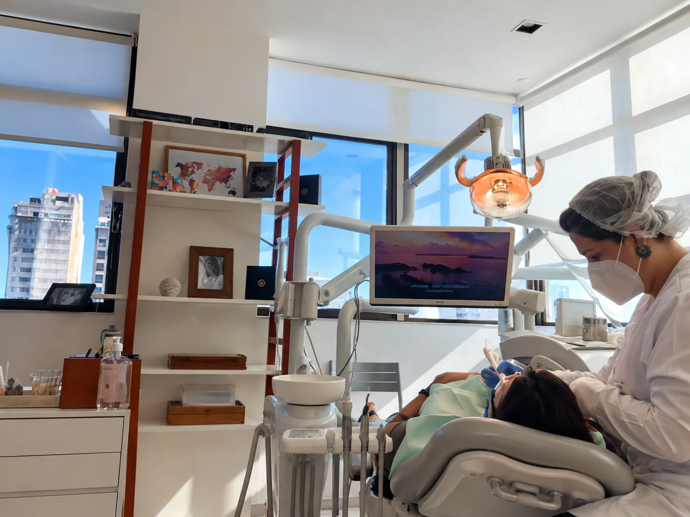
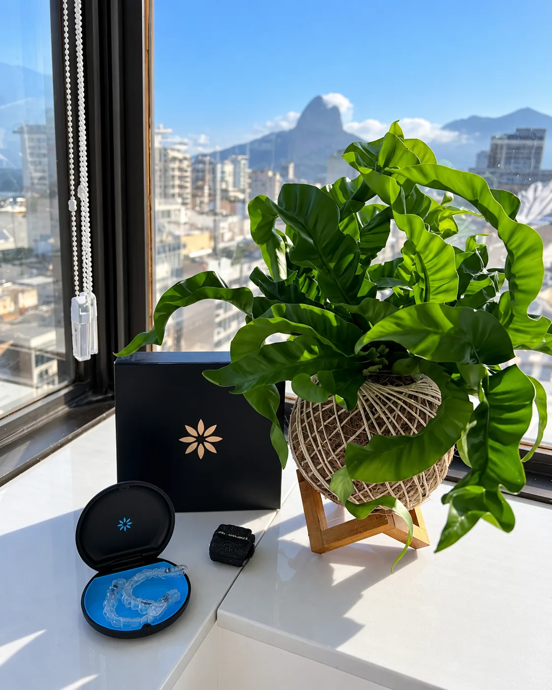
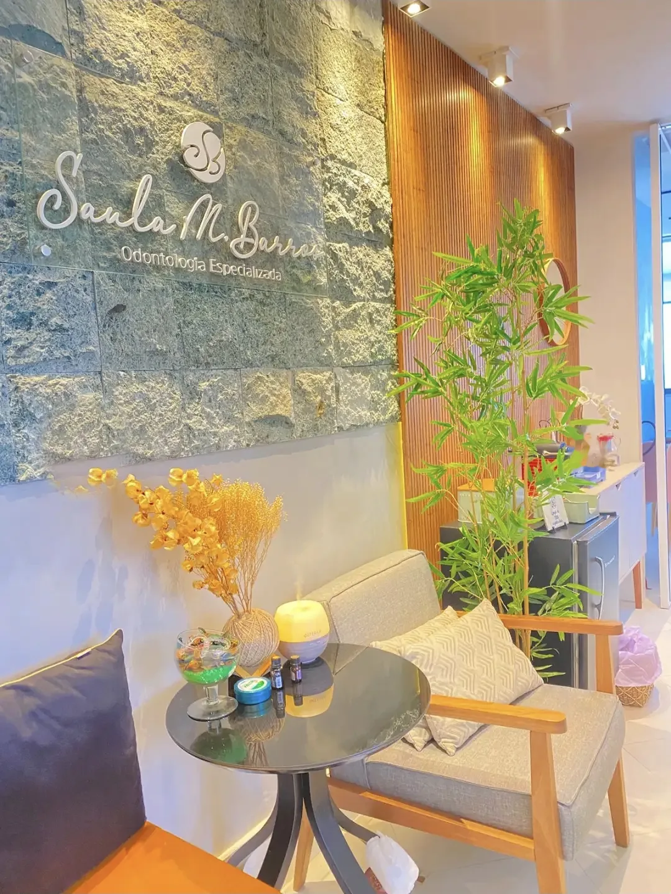
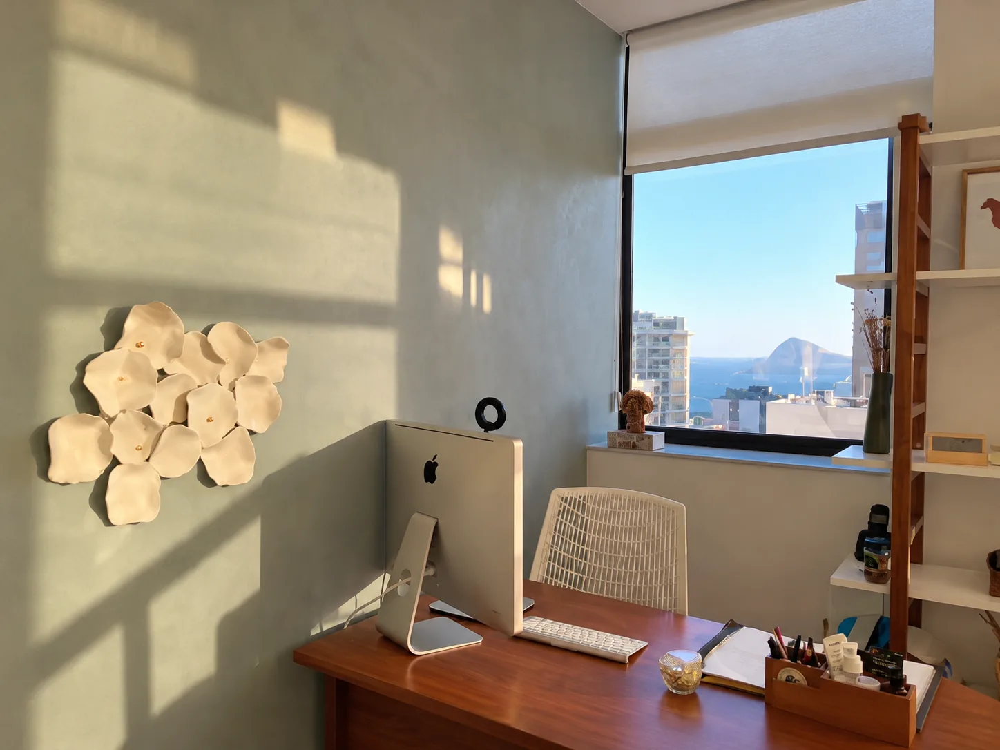
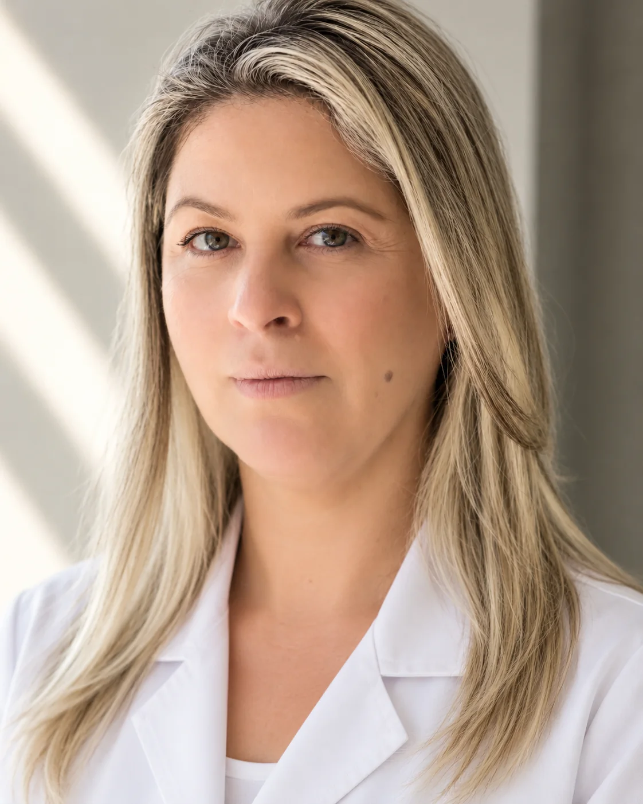
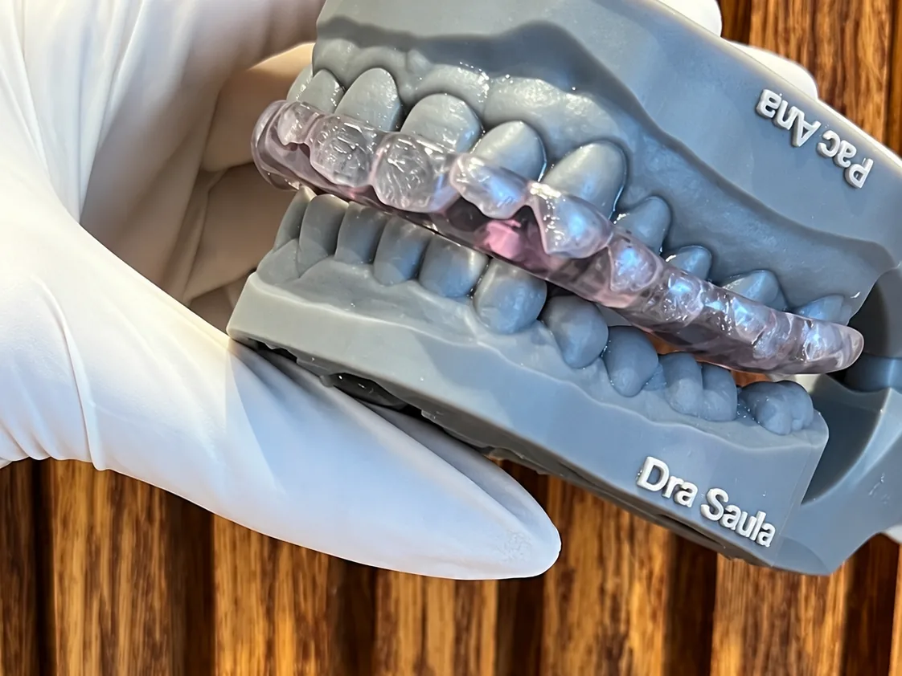
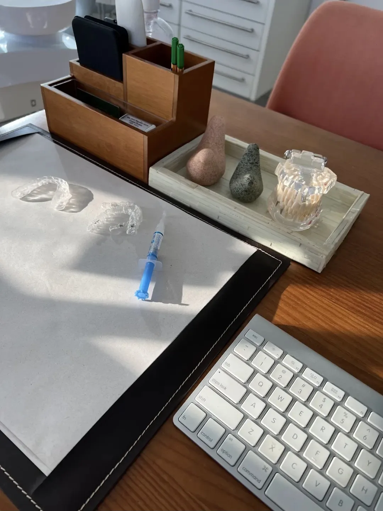
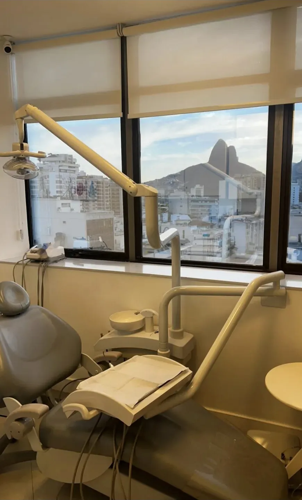
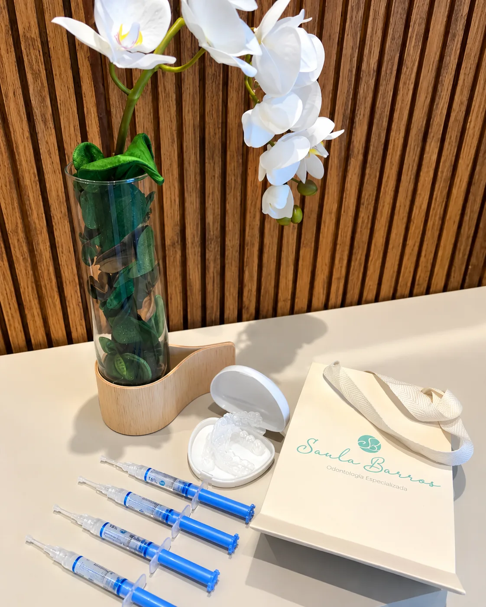
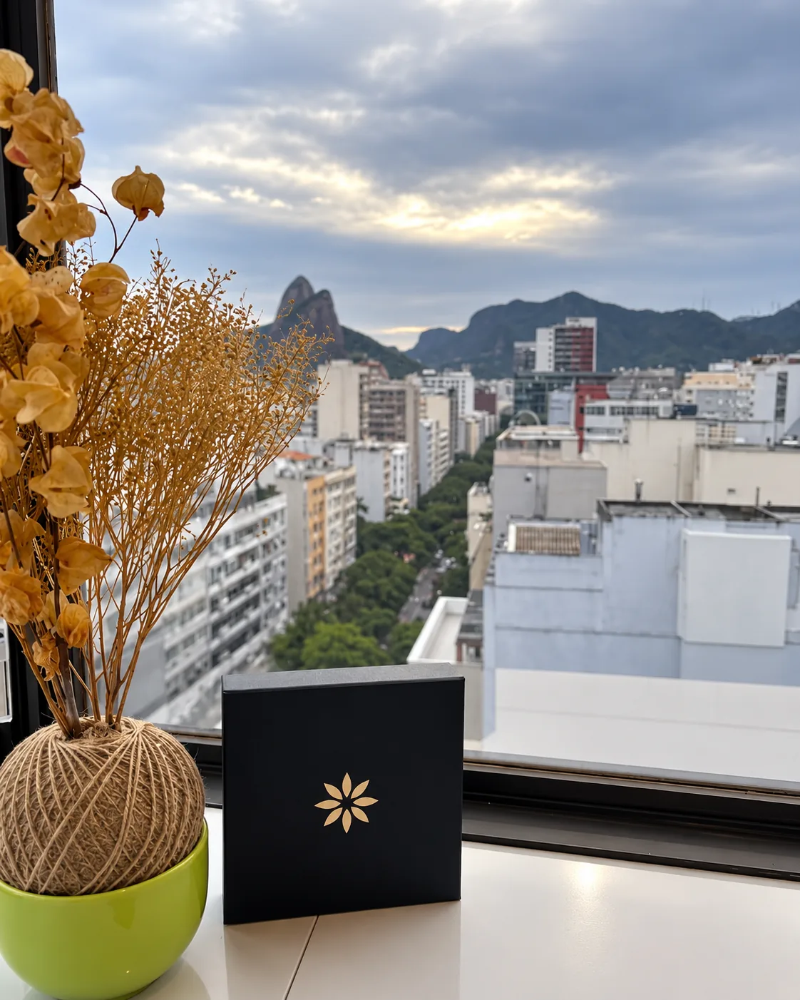

Especialidade
Tratamento de canal
Trata a dor e a infecção dentro do dente para mantê-lo na boca, com anestesia cuidadosa e acompanhamento por imagem.
Agendar avaliaçãoTratamento de canal, prótese e estética do sorriso com a Dra. Saula Barros. Cada etapa explicada com calma, num consultório com vista para o Dois Irmãos.
Dra. Saula Magalhães Barros
Cirurgiã-dentista, CRO-RJ 31015





Dra. Saula Magalhães Barros, CRO-RJ 31015
Cirurgiã-dentista desde 2011, a Dra. Saula atende pessoalmente cada paciente, do primeiro exame à última revisão. Explica o que vai fazer antes de fazer, e busca resultados saudáveis, naturais e pensados para cada pessoa.
Tudo começa por uma avaliação completa. A indicação é sempre individual, e você sai da consulta sabendo o que será feito e por quê.
Trata a dor e a infecção dentro do dente para mantê-lo na boca, com anestesia cuidadosa e acompanhamento por imagem.
Agendar avaliaçãoCoroas, pontes e próteses para recuperar dentes perdidos ou desgastados, devolvendo mastigação, conforto e um sorriso natural.
Agendar avaliaçãoFacetas e restaurações estéticas para ajustar forma, cor e pequenos espaços, com um resultado que parece seu.
Agendar avaliaçãoNo consultório ou com moldeira em casa, supervisionado, depois de avaliar a saúde dos dentes e da gengiva.
Agendar avaliaçãoCorreção da posição dos dentes com placas transparentes, feitas a partir do planejamento do seu caso e trocadas por etapas.
Agendar avaliação

No Edifício Quartier, em Ipanema, com o mar de um lado e o Dois Irmãos do outro.



Se preocupa com todos os detalhes, explica tudo e é muito atenciosa. A recepcionista também. Fora que o consultório é impecável.
Camila Ferreira
Eu, que tenho pavor de dentista, me senti muito bem acolhido. E o mais importante para mim: todo o procedimento sem sentir dor.
Jhonatan Silva
Depois de passar por vários profissionais, encontrei a Dra. Saula. Competente, dedicada, restaurou a minha saúde bucal. Recomendo a todos.
Marcus Ribeiro
Confirme pelo WhatsApp se o seu plano cobre o tratamento que você procura.
O tratamento é feito com anestesia e a maioria dos pacientes sente só o desconforto de ficar com a boca aberta. Depois pode haver uma sensibilidade leve por alguns dias, acompanhada de perto.
É uma avaliação: conversa, exame clínico e, se preciso, pedido de exames de imagem. Você sai sabendo o que precisa ser feito e quais são as opções.
As formas de pagamento são apresentadas junto com o plano de tratamento.
Pelo WhatsApp (21) 99920-3458 ou pelo telefone (21) 2512-2399. Atendemos de segunda a quinta, das 9h às 19h.
Conte o que você gostaria de tratar e receba os horários disponíveis.